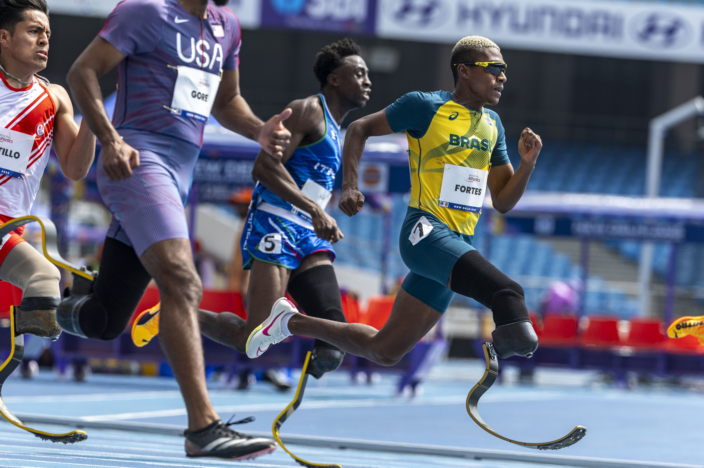

Dados que viram decisões
Modelos de IA auxiliam na escolha de formatos, horários e mensagens com maior potencial de alcance. Combinando dados de engajamento, leitura de contexto e análise de sentimento, as equipes ajustam conteúdos para entregar relevância e acessibilidade.
O uso responsável da tecnologia inclui testes com leitores de tela, legendas automáticas revisadas e contraste adequado, garantindo que a comunicação chegue a todos. O resultado é um ecossistema mais inclusivo e eficiente.
Voltar às Notícias